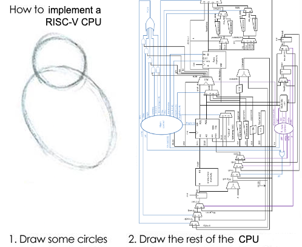

I am an Assistant
Professor of Computer Science in the School of Data Science at the Chinese University of Hong Kong,
Shenzhen. I completed my PhD at UC Santa Barbara, co-advised by Jonathan Balkind and Ben Hardekopf.
I conduct research at the intersection of Programming
Languages and Computer Architecture. My
research integrates formal methods into open-source languages for chip
design to increase developer agility with correctness guarantees.
I am looking for students! You can read my research overview for more information. If
you think we have mutual interests, please send me an email: SPAM zsisco【at】
cuhk「dot」edu《dot》cn
Conference and Journal
Publications
- Control Logic
Synthesis: Drawing the Rest of the OWL (ASPLOS 2024)
Zachary D. Sisco, Andrew David Alex, Zechen Ma, Yeganeh
Aghamohammadi, Boming Kong, Benjamin Darnell, Timothy Sherwood, Ben
Hardekopf, Jonathan Balkind
(Source code repo)
- Loop Rerolling
for Hardware Decompilation (PLDI 2023)
Zachary D. Sisco, Jonathan Balkind, Timothy Sherwood,
Ben Hardekopf
(Source code
repo)
- A
semantics-based approach to concept assignment in assembly code
(ICCWS 2017)
Zachary D. Sisco, Adam Bryant
- Modeling
information flow for an autonomous agent to support reverse engineering
work (JDMS 2017)
Zachary D. Sisco, Patrick Dudenhofer, Adam Bryant
Workshop Papers
- There and Back Again: A
Netlist’s Tale With Much Egraphin’ (LATTE 2024)
Gus Henry Smith, Zachary D. Sisco, Thanawat
Techaumnuaiwit, Jingtao Xia, Vishal Canumalla, Andrew Cheung, Zachary
Tatlock, Chandrakana Nandi, Jonathan Balkind
(Web
demo)
- Semi-Automated Translation of a Formal
ISA Specification to Hardware (PLARCH 2023)
Harlan Kringen, Zachary Sisco, Jonathan Balkind,
Timothy Sherwood, Ben Hardekopf
- On the Generality of Matrix Multiplication (PLARCH 2023)
Andrew Alex, Zachary D. Sisco, Jonathan Balkind
- A
Position on Program Synthesis for Processor Development (LATTE
2022)
Zachary D. Sisco, Jonathan Balkind, Timothy Sherwood,
Ben Hardekopf
(Source code
repo)
Recorded Talks
Theses
Random Bits
Research Overview
The programming languages and tools used for chip design have not
kept pace with the growing complexity of these chips for emerging
applications. To handle these demands, and to enable newcomers to the
space with smaller teams and fewer resources, we need new approaches to
address the current state-of-the-art in chip development.
The research I conduct addresses 3 key challenges in chip design:
Multilevel reasoning: The current chip
development process suffers from decoupling between all of the layers of
abstraction. Enormous effort goes into verification between the
specifications, models, and implementation—the difficulty being the
semantic gap between these layers. This disjointed process leads to long
design iterations, hindering agility and increasing verification
burden.
Interoperability: The growth of new HDLs and
open-source hardware design tools adds new features that improve the
process of designing hardware over legacy languages and proprietary
tools. However, these new languages and tools often lack the ability the
interoperate, fragmenting the communities that use them and making
migration difficult, as manual porting is impractical. Limited
interoperability means that new HDLs cannot leverage the vast body of
existing designs written in legacy languages, and existing designs
cannot take advantage of the new features provided by these modern
tools.
Technology constraints: Languages and tools for
chip design rely on technology-specific components, but lack helpful
abstractions needed to support common deployment platforms, making it
difficult to adapt and compose designs. Targeting platforms, such as
ASIC and FPGA, requires technology-specific code and so each new
technology being targeted requires updating an existing part of the code
with multiple independent descriptions of the same component.
To address these challenges, my research integrates
automated-reasoning techniques, such as constraint
solvers and equational reasoning, into programming languages used for
chip design. These techniques improve developer agility and provide
formal guarantees about the design. For example:
- Integrating constraint solvers (SMT) into languages for chip design
to enable program synthesis and correct-by-construction code
generation.
- Using equational reasoning to transform designs into equivalent but
optimal representations.
- Developing domain-specific languages (DSLs) which incorporate domain
models into languages for design tasks.
Projects
These projects tackle different aspects of the challenges outlined
above using automated-reasoning techniques.
Control Logic Synthesis

Chip design requires reasoning between different layers of abstraction:
from an architectural specification (the instructions the chip
executes), to the microarchitectural datapath (the functional units),
down to the low-level control logic (which coordinates computation on
the chip). Implementing control logic itself is tedious and error-prone,
where changes at these levels propagate non-obvious changes to the
control. This work, published in ASPLOS 2024,
introduces a new technique, control logic synthesis,
which automatically generates conrrect-by-construction control logic for
a datapath according to a formal architectural specification.
The insight is adapting program synthesis techniques to HDLs,
bridging the gap between the datapath and the high-level specification—a
key direction we previously identified (LATTE
2022). Control logic synthesis allows chip developers to freely
modify and iterate over the designs of both the specification and the
datapath without getting caught up in the abstruse details of control,
as we show in case studies covering embedded-class RISC-V cores and
accelerators geared for cryptographic applications.
Future work will consider more control structures such as microcode
in the context of complex microarchitecture optimizations. There are
challenges ahead in terms of scaling automated reasoning techniques to
handle large, real-world chip implementations.
Hardware Decompilation
 Imagine I handed you this chip. How could you know what’s inside it? To
date, hobbyists interested in this kind of computer archaeology take
photos of chips and apply machine learning to identify individual
components. But from there a new problem arises: how do you know what
that sea of components actually means? For instance, what if
you wanted to duplicate this chip? Or what if you wanted to recover the
code that produced the chip in the first place? This is the problem we
call hardware decompilation: Taking a digital circuit
like in this photo and recovering the high-level source code that can
reproduce it.
Imagine I handed you this chip. How could you know what’s inside it? To
date, hobbyists interested in this kind of computer archaeology take
photos of chips and apply machine learning to identify individual
components. But from there a new problem arises: how do you know what
that sea of components actually means? For instance, what if
you wanted to duplicate this chip? Or what if you wanted to recover the
code that produced the chip in the first place? This is the problem we
call hardware decompilation: Taking a digital circuit
like in this photo and recovering the high-level source code that can
reproduce it.
By the way, this photo is of the Z80, an 8-bit microprocessor made
around 1975. Chips nowadays could be made up of tens of
billions of components. Modern digital design is complex, and
chip designers have to analyze these enormous circuits, which is often a
bottle neck in the design process. This research not only helps
hobbyists reverse engineer vintage computers, hardware decompilation
enables new design tools for modern chip designers. Recovering structure
in digital circuits allows chip designers to analyze circuits faster and
with stronger correctness guarantees.
Our initial work in hardware decompilation focused on hardware loop
rerolling, which is about finding repeated logic in circuits and
lifting it to loops in high-level HDL code. There are many more
programming abstractions to recover such as modules, state machines,
memory, etc., as well as applications for hardware decompilation to
improve the design process (such as automated technology
re-targeting).
An open question for specification-driven chip development is: how to
refine an implementation from a spec? We are exploring methods for
deriving whole chip implementations from architectural specifications (PLARCH 2023). The long-term goal is to
develop techniques that fully derive HDL code implementations
for entire chips from formal architectural specifications, where
compilation proceeds as a series of proof-carrying refinements
moving down the layers of abstraction from the architecture-level to the
microarchitecture, all the way to hardware.
Enriching
Hardware–Software Interfaces
Besides general-purpose computing, there are other aspects of the
hardware–software interface such as communication and data-movement
protocols and hardware accelerators that speed up specialized
computation and system services. The difficulty in using these
interfaces lies in the development process; current languages and
libraries do not provide the machinery to guide programmers to correctly
use them. Further, these interfaces run through the whole
hardware–software stack, encountering constraints through each layer.
Characterizing these interfaces as abstractions found in programming
language theory, we are developing new compilers that bridge the
hardware–software interface at these new frontiers to ensure correctness
of the use of—and even the automated synthesis of code using—these
interfaces through symbolic reasoning and constraint solvers. Our
previous work in control logic synthesis paves the way for exploring
these new interfaces, assisting the programmer in reasoning about
specialized hardware where they may have limited understanding.
Tips for Prospective
Students
All of this research intersects with three areas: programming
languages, computer architecture, and formal methods. It is not required
or expected that you have familiarity with all of these areas. But you
should have an interest in at least one, and an openness to the
others.
Back to top ↑